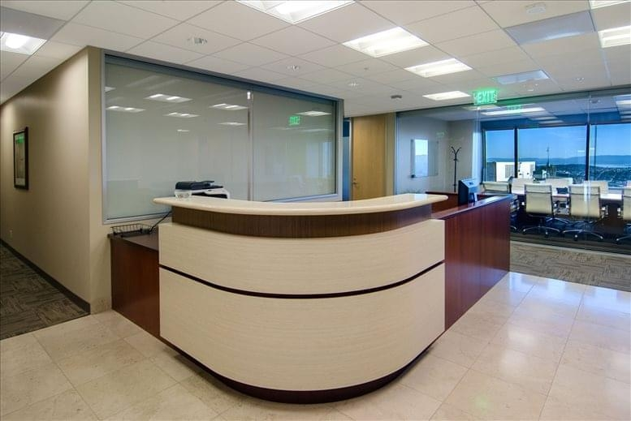
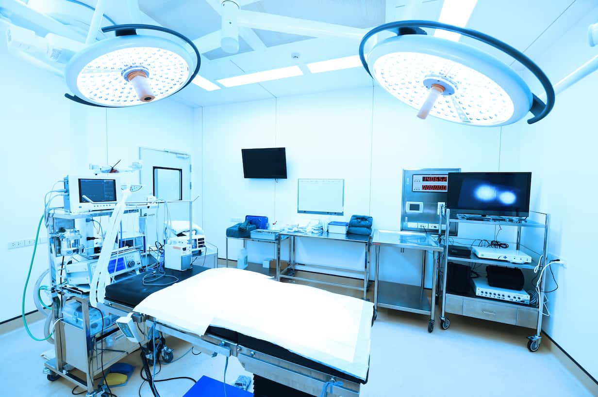
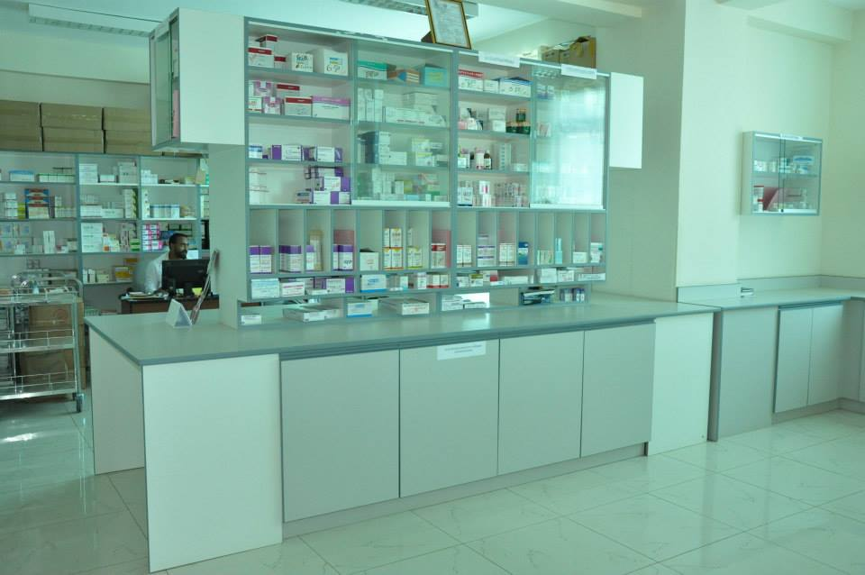

|  |
Reservations Room
The most important duty of a reservationist is to make and maintain reservations for customers. They can take these reservations over the phone, in person or over email, depending on the customers need.Regardless of how they interact with the customer, they always present a friendly and helpful demeanor so that customers feel comfortable speaking with them. If there's a problem with a reservation or a customer, it's the reservationist's job to try to resolve the issue.
|
Bed Room
Our hospital bed is an adjustable bed that a person typically sees within a hospital setting. With a hospital bed, you can easily adjust the height, so the head can go up or down and the feet up or down for the patient's comfort. A hospital bed also makes life easier for the caregiver.
|
 |
|  |
Operating Room (OR)
An OR also called surgery center, is the unit of a hospital where surgical procedures are performed. An operating room may be designed and equipped to provide care to patients with a range of conditions, or it may be designed and equipped to provide specialized care to patients with specific conditions.
|
Emergency Room
What an emergency room does The main function of emergency rooms (or the emergency department of your local hospital) is usually to treat life-threatening illnesses and injuries. They have advanced diagnostic equipment and access to more types of medicine than your primary care doctor might.
|
|
 |
Pharmacy
A store or part of a store in which drugs and medicines are prepared and sold.
A place in a hospital where drugs and medicines are prepared and given out.
|